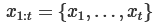
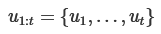
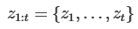
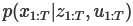

不確実性の下での地図の作成はSLAM問題と呼ばれる。この文献では、この問題に対するさまざまな用可能である解決案がある。これらのアプローチは、フィルタリングまたは平滑化のいずれかに分類できる。フィルタリングアプローチは、システムの状態が現在のロボットの位置と地図で構成されるオンライン状態推定として問題をモデル化する。新しい測定値が利用可能になったときにそれを組み込むことによって、地図の拡張および改良を行う。有名な手法としてはカルマン情報フィルタ、パーティクルフィルタ等がある。これらは主にオンラインSLAMメソッドと呼ばれる。対して、平滑化アプローチは、測定した情報セットからロボットの完全な軌道を推定する。これらの手法は最小二乗問題として扱われる。
SLAM問題に対処する直感的な方法は、いわゆるグラフベースによる定式化であろう。ロボットの姿勢やランドマークを頂点、それらを関係づけるセンサデータを辺としたグラフの解決により、SLAM問題を解くことが出来る。しかし、観測は常にノイズの影響を受けるため、このような制約が矛盾する可能性がある。このようなグラフが作成されると、測定値と最大限に一致するノードの構成を見つけることが重要な問題となる。これは、誤差最小化問題となる。
グラフベースSLAMは1997年にLuとMiliosらによって提案された。当時は複雑な計算が必要であったため流行らなかったが、現在では有力なアプローチとなっている。このチュートリアルの目的は、SOTA(state-of-the-art)なグラフベースのSLAMの理解へ読者を導くことである。このチュートリアルを理解するには、線形代数、多変量最小化、および確率論に関する十分な知識が必要である。
m: 地図
: ロボットの軌道
: オドメトリ
: 環境情報
上記の変数の定義の上で完全SLAM問題は以下のように定義されます。
ポーズxとオドメトリuは様々な方法で表現できます。例えば、占有グリッド(occupancy grids)、表面マップ(surface maps)、生なセンサデータ値としても表現可能である。環境や使用するアルゴリズムによってそれは使い分けられる。ランドマークによる地図は環境の特徴量が識別可能な時に好んで用いられる。特にカメラ使用時に使われる。逆に密な地図表現は通常距離センサと合わせて用いられる。これらのデータは測定値と測定した場所のペアで保存される。式01で与えられた事後処理を推定するには高次元の状態空間を操作する必要がある。この構造は、静的世界の仮定とマルコフの仮定という、ある種の一般的に行われている仮定に由来する。この構造を記述する便利な方法として、図1に示す動的ベイズネットワーク(DBN)がある。これは再帰的モデルである。
DBNに代わる表現としては「グラフベース」、「ネットワークベース」等がある。グラフベースSLAMではロボットの姿勢をグラフとしてモデル化する。グラフベースSLAMは「グラフ構築」と「グラフ最適化」の二つの問題から成る。
ここに関連研究を挙げる。このチュートリアルではグラフベースSLAMに焦点を当てているので、そのようなアプローチを検討する。
-
Lu, Milions
方程式全体を最適化することで誤差を減らし、地図を洗礼する手法を最初に提案した。
-
Gutmann, Konolige
増分推定アルゴリズムを実行しながらループ閉じ込みを検出する手法を提案した。これ以降、様々なネットワーク最適化の手法が提案された。
-
Howardetら
「relaxation」を適応してロボット位置を特定する。
-
Freseら
「multi-level Relaxation(MLR)」と呼ばれるGauss-Seidel relaxationを提案した。それは異なる解像度でのrelaxationを適用している。
-
Dellaert, Kaess
オフラインSLAMへの適応のために疎行列因数分解を用いた。
-
Kaesset ら
疎な因数分解を計算するために部分的な並び替えを利用したオンラインSLAM「ediSAM」を発表。
-
Konoligeet ら
線形化されたシステムを効率的に構築するためのポーズグラフ法のオープンソースで提案した。
-
Olson ら
確率的勾配降下法に基づいた効率的な最適化手法を提案。
-
Grisetti
Olsonのアプローチを拡張し、2Dと3Dのノードを木構造で扱うアプローチを提案した。 このようにして収束速度を向上させている。
-
GraphSLAM
最適化問題の次元を減らすために変数消去技術を用いている。
-
The ATLAS フレームワーク
2階層でグラフを構築し、最下層ではカルマン・フィルタを用い、第2レベルではローカルマップを整列させて大域最適化アプローチを行う。
-
Estrada ら
独立した小域地図を用いた「Hierarchical SLAM」を提案
-
Olson
フロントエンド部分でのスペクトルクラスタリングを用いた外れ値除去
-
N ̈uchter ら
3Dマッピングを統合的に行うSLAM
-
Lu, Milios
Nuchterらの提案した3D SLAMの最適化
グラフベースSLAMでは生のセンサデータを抽象化することで単純化された測定問題を構築します。何故なら、推定プロセスでデータを単純化せずに扱うと、組み合わせの複雑さが爆発的に増大することになる。そのため、ほとんどの実用的なアプローチでは、最も可能性の高いトポロジーに推定値を限定している。
正しいデータ関連付けを計算するためには、フロントエンドではロボットの軌跡上の条件付き優先順位を一貫して推定する必要がある。ロボットが環境を探索する際には、フロントエンドとバックエンドの実行を連動させる必要があり、バックエンドの精度と効率性は、良いSLAMシステムを設計する上で非常に重要である。このチュートリアルでは、データ関連付け問題に対する高度なアプローチは説明しない。このような方法は、スペクトルクラスタリング、ジョイント互換性分岐とバインド、またはバックトラッキングを用いてアソシエーションに取り組もう。